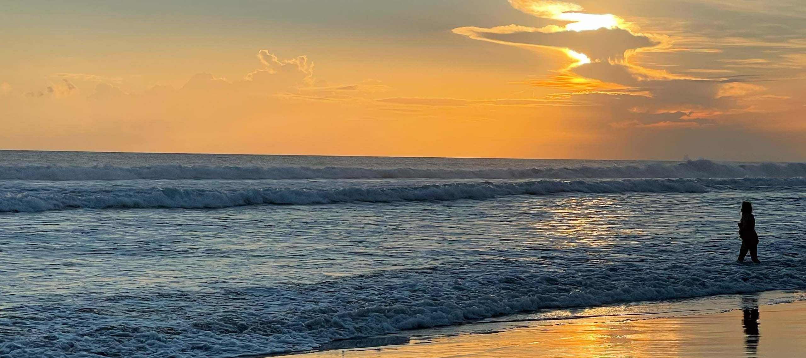

Podróże po Azji
C.U.D. Private Journeys
Azja, osobiście zaprojektowana wokół Ciebie.
01 — Podróż
Podróż zaprojektowana wokół Ciebie.
Niektóre podróże powstają dla grupy.
Inne powinny należeć tylko do Ciebie.
C.U.D. Private Journeys to indywidualnie projektowane podróże po Azji, które osobiście dobieram i układam wokół ludzi, którzy w nie wyruszają, ich sposobu podróżowania i tego, czego chcą doświadczyć.
- Bez z góry ustalonego planu.
- Bez standardowego pakietu.
- Bez katalogu identycznych wyjazdów.
02 — Rozmowa
Zamiast tego zaczynamy od rozmowy.
Dokąd chcesz pojechać?
Co chcesz odkryć?
Jak lubisz podróżować?
Co jest dla Ciebie ważne?
Na tej podstawie osobiście dobieram miejsca, doświadczenia, ludzi, jedzenie i chwile, które kształtują Twoją podróż.
03 — To może być
Przykłady podróży Private Journey
- Powolna podróż przez Wietnam.
- Prywatna ucieczka w góry Bali.
- Podróż zbudowana wokół jedzenia i lokalnej kultury.
- Przygoda dzielona z przyjaciółmi.
- Albo po prostu czas, by na nowo się połączyć, bez planowania każdej chwili.
04 — Twoja
Podróż jest Twoja.
Dobór jest mój.
Osobiście zaprojektowana.
Starannie dobrana.
Wyjątkowo Twoja.
05 — Zapytanie
Private Journeys będą dostępne wkrótce.
Private Journeys są projektowane i wyceniane indywidualnie, w zależności od celu, czasu trwania, stylu podróżowania i poziomu kuratorskiego zaangażowania.
Jeśli chcesz zapytać o przyszłą podróż:
Zobacz także C.U.D. Experiences i The C.U.D. Collection.